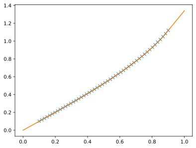

pyarts3.math
Contains interfaces to the ARTS interpolation routines.
This exists mostly to test internal ARTS methods from Python, and is not intended to be high-performance code.
- pyarts3.math.interp(y, *args)[source]
Interpolate to a single point
Note that this is not an efficient interpolation routine and you should use other methods if you are interested in speed. This is high level wrapper to the C++ routine, with no effort to optimize the python loops.
This method exists so that the interpolation routine inside ARTS can be tested from python.
import pyarts3 as pyarts import numpy as np import matplotlib.pyplot as plt x = [0.1, 0.4, 0.6, 0.9] y = np.arcsin(x) xn = 0.5 yn = pyarts.math.interp(y, pyarts.arts.interp.LagrangeCyclic(xn, x, 1)) plt.plot(x, y, '-x') plt.plot([xn], [yn], '*')
- Parameters:
y (numpy.ndarray-like (e.g., Vector, Matrix, ..., or pure numpy.ndarray)) – A set of data.
*args (Lagrange or LagrangeCyclic) – A single ARTS Lagrange interpolants. See pyarts.arts.interp
- Return type:
The interpolated value
- pyarts3.math.reinterp(y, *args)[source]
Reinterpolate to new grids
Note that this is not an efficient interpolation routine and you should use other methods if you are interested in speed. This is high level wrapper to the C++ routine, with no effort to optimize the python loops.
This method exists so that the interpolation routine inside ARTS can be tested from python.
import pyarts3 as pyarts import numpy as np import matplotlib.pyplot as plt x = np.linspace(0.1, 0.9) y = np.arcsin(x) xn = np.linspace(0, 1) yn = pyarts.math.reinterp(y, pyarts.arts.interp.ArrayOfLagrange(x, xn, 1)) plt.plot(x, y, '-x') plt.plot(xn, yn)
(
Source code,svg,pdf)
- Parameters:
y (numpy.ndarray-like (e.g., Vector, Matrix, ..., or pure numpy.ndarray)) – A set of data.
*args (ArrayOfLagrange or ArrayOfLagrangeCyclic) – A list of ARTS Lagrange interpolants. See pyarts.arts.interp
- Return type:
The interpolated value
{kind=link}